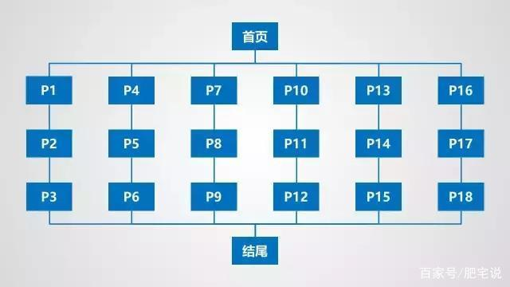

不知道诸位身在职场的小伙伴有没有遇到这么一种情况。眼看着周五下班时间快到了，领导突然叫你到办公室然后给你下了一个任务：马上写个什么什么文档，顺便把PPT做了。仁慈点的领导可能会下周一要，一般的领导会要你下班前交。我知道此刻的你大概已经在内心里把领导锤成各种形状了，但是这并不能帮你解决眼前的困境。在这里有三个小套路分享给大家，同时还有我用过的可以帮助思维整理的一些小工具。可以快速轻松的梳理好你的文案结构，争取做到早日下班。
套路一：金字塔结构
金字塔形结构是由金字塔原则结合PPT变化而来。这种结构的基础前提是：任何事件都可以归纳出一个中心论点，再依此为中心向外发散得到若干个论据支持（一般情况下三至七个为宜）。这些论据被称为一级论据，当然其本身也可以是个论点，被二级论据支持，如此延伸，状如金字塔。是不是看得很晕？其实总结起来大概和下面这个图差不多。
此结构下，每一层的支持论据都需要做到即彼此独立，相互不存在覆盖重叠，但是作为整体存在时，可以包络全部不遗漏。不遗漏才能保证不造成不必要的损失，不重叠才能保证简化整体文档，不拖沓累赘。
套路二：碎片结构
所谓碎片化，是指将原本完整的事物打散成为碎片，成为诸多零散的部分。而碎片化结构，就是指打散整体结构，跳过中心论点，直接讲述论据。这种结构和金字塔结构本质的区别在于，碎片化结构是一种去中心化的结构，围绕中心思想，跳过中心论点，直接将相关的问题及答案进行阐述。
此结构下对每一个碎片的要求与金字塔结构相似，即都是需要每一个论据或者说碎片既彼此独立，相互不存在覆盖重叠，但是碎片间存在一定的联系，整合成为整体时，可以包络全部不遗漏。以保证简化整体文档，直接指向要点，且不至于造成不必要的损失。
上图是碎片化结构的其中一种展开方式的示意。整体由若干个碎片整合形成，碎片之间相互存在一定联系，但并不关联。每一个碎片可以由一个论点启发，由若干的论据支撑。最后总结形成整体。
上图为碎片化结构PPT的另外一种展开方式的示意。整体同样由若干个碎片整合形成，但碎片之间相互联系比较紧密，关联度高。每一个碎片可以由一个论点启发，由若干的论据支撑。最后总结形成整体。
套路三：问答式结构
问答式结构一般是指将现有的问题整理归纳出来，根据每一个问题给出对应的答案。相对于碎片化结构PPT，问答式结构虽然也呈现碎片化但是问题与问题之间可能不存在中心思考与内部联系，不一定能整合成为整体且一般是用于对已经发生或发现的若干个问题直接将答案进行阐述。
我是肥宅，关注我，一起成为老板眼中不可缺少的人。
关于我的PPT - 联系我们 - 广告服务 - 友情链接 - 版权声明 - 人才招聘 - 网站动态
©CopyRight 2002-2019 CHINAZ.COM Inc All Rights Reserved. 我的PPT 版权所有